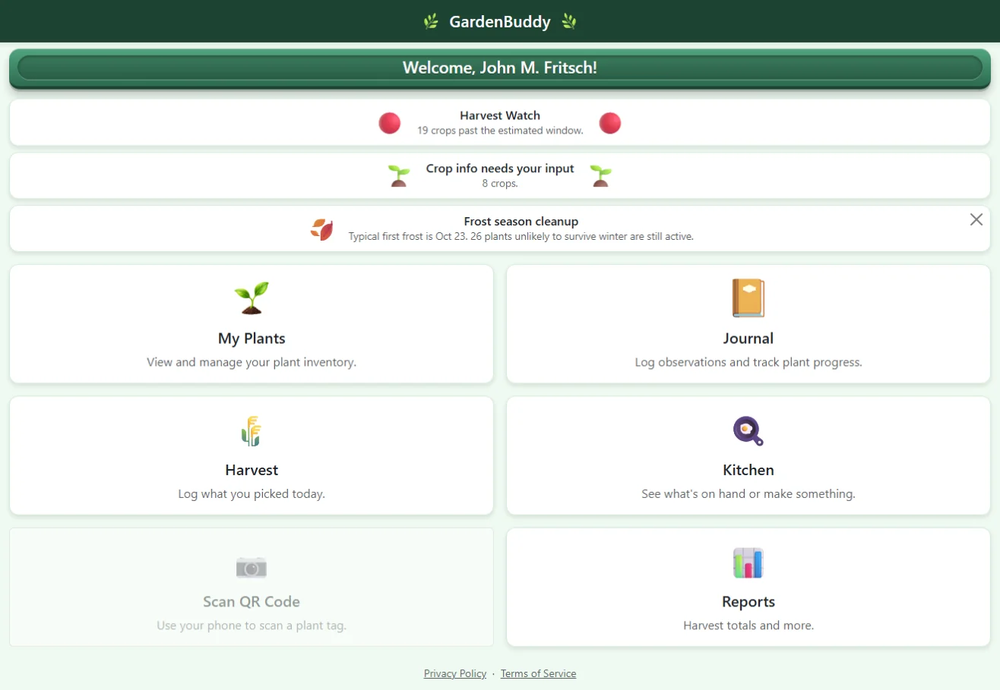
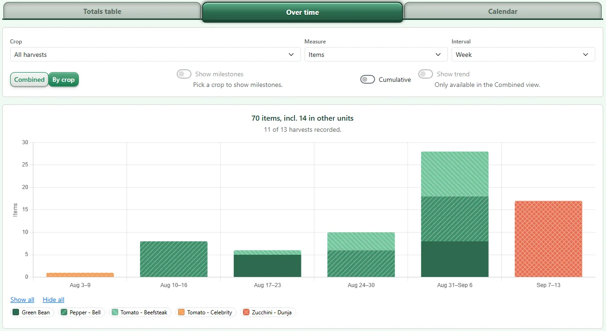
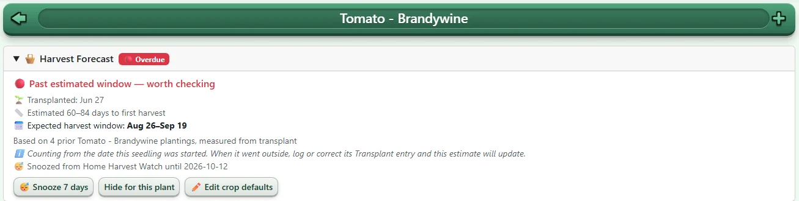
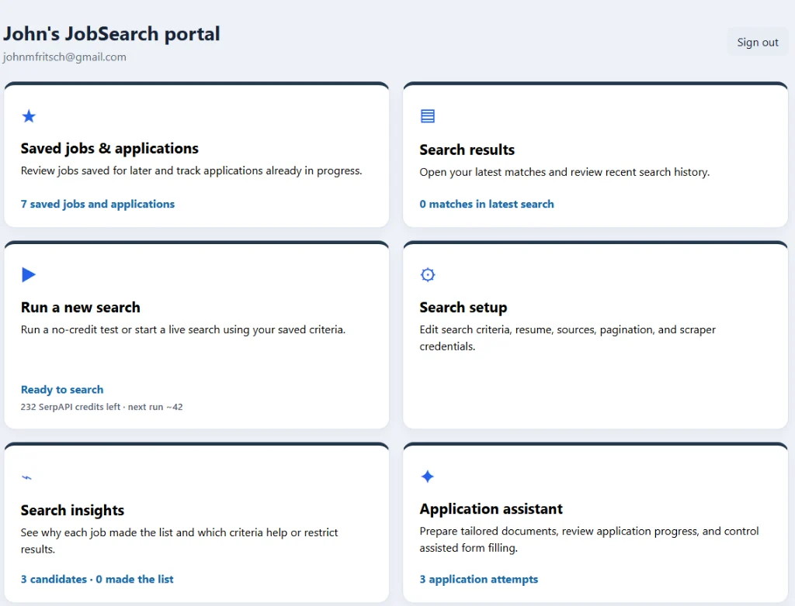
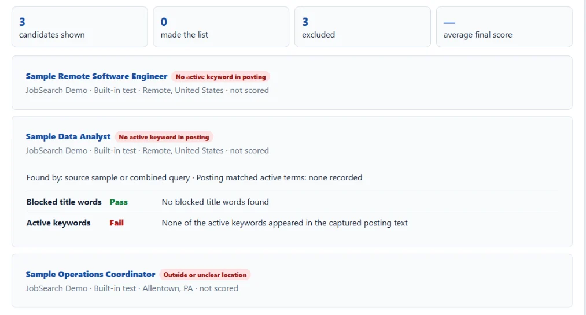
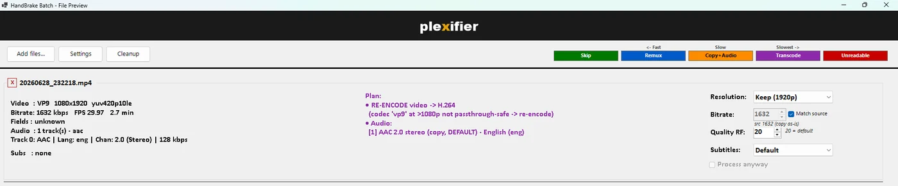
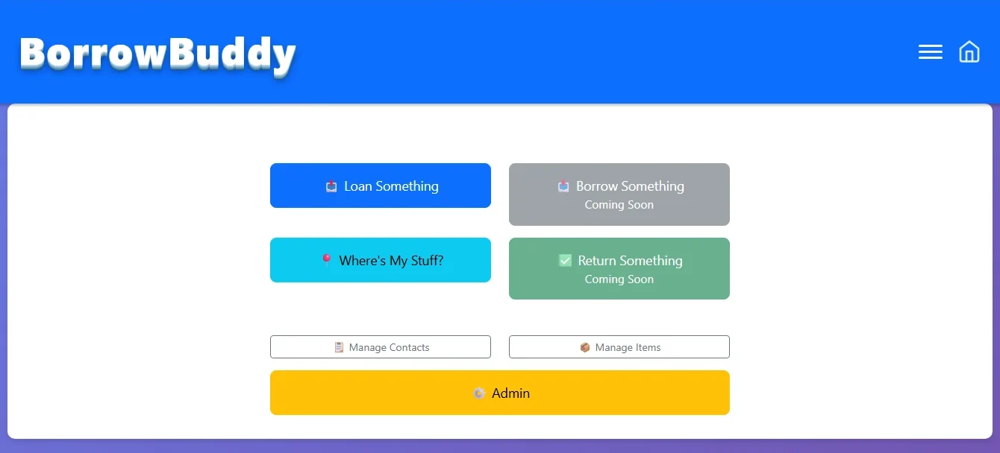
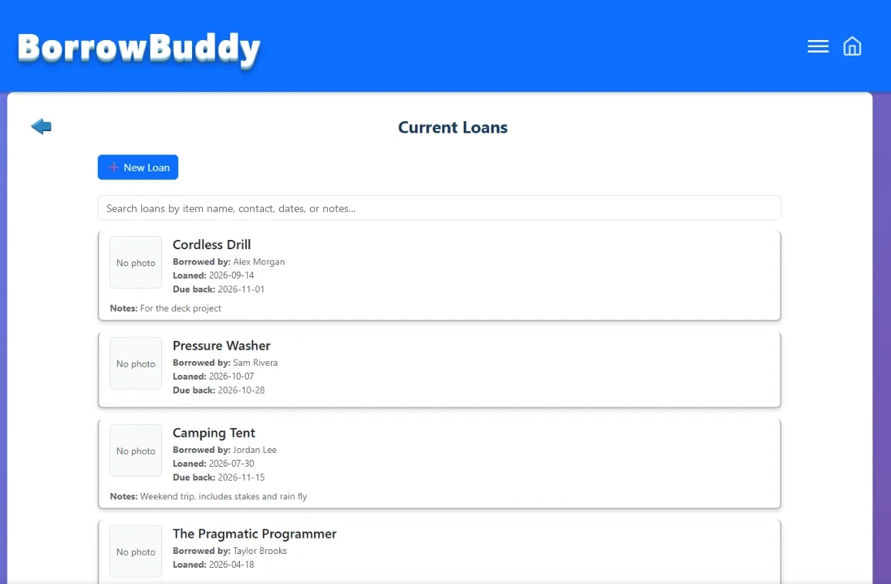
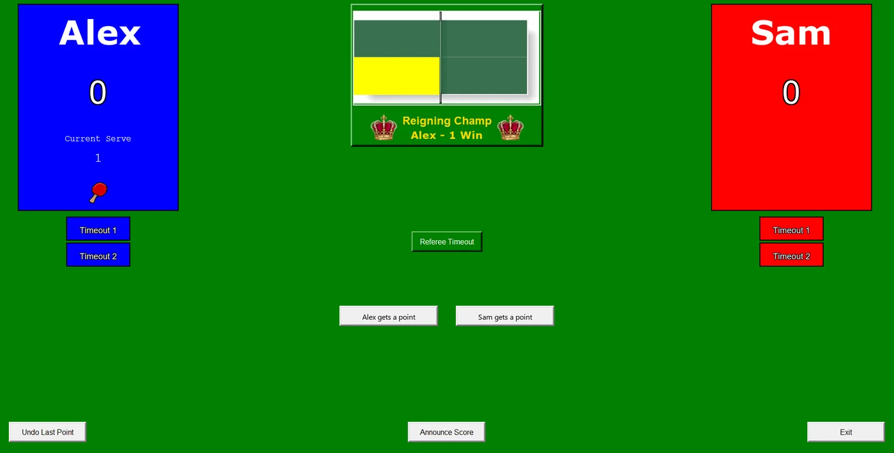
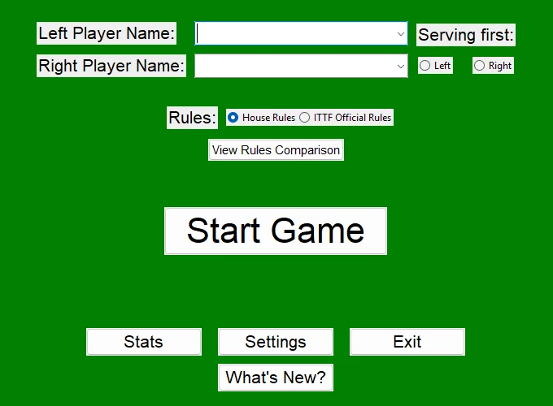

Projects
Real applications with real users, built and run on hardware I own. I design, review, deploy, and operate them, using agentic AI tools (Claude Code, Codex, Grok) to do the building. Most of them sit behind a login, so the screenshots below use sample data. Live demos and code walkthroughs are available on request.
GardenBuddy
ProblemA home garden generates information nobody keeps together: what was planted where, when it sprouted, what each plant produced, and what happened to the harvest afterwards. Notes apps and spreadsheets don't connect any of it.
ResultA phone-installable app in daily use by 9 gardeners: 820 plants, 4,783 journal entries, 879 harvests and 1,667 photos logged since March 2026, shipped as 196 releases in seven months, most of them driven by the in-app feedback and ticketing system.
- Seed Bank traces saved seed back to the plant it came from, season after season.
- Harvest Watch forecasts each plant's first harvest from your own growing history and flags crops coming due.
- Kitchen follows the harvest after it's picked, logging multi-step work (cook it, preserve part, give some away) as one entry.
- Harvest analytics show charts over time, crop mix, per-plant timing and germination rates, with CSV export.



Technical Details
Flask + SQLite behind Gunicorn (gthread workers, --preload so workers are born
warm instead of taking ~6s on a cold first request). A self-healing watchdog polls a
/health endpoint and automatically recycles or restarts a wedged worker. I built it
after a real production incident in which a stuck thread silently dropped roughly half of all
requests for days before anyone noticed. The data model has evolved through 100+ numbered schema
migrations as real usage uncovered new needs. Dev and prod run as parity-matched environments with
a scripted deploy that backs up prod, applies migrations, health-checks the restart, and stamps the
release notes. Every change is written to an audit log.
JobSearch
ProblemJob boards bury the few relevant roles under noise, and applications made on a dozen different sites are hard to keep track of.
ResultA multi-user search platform used by 6 people for their own searches. It scores each listing against the right résumé and explains every decision (1,184 so far). It also tracks each application from Saved to Offer.
- Reads Workday, SuccessFactors, UKG, and iCIMS career sites directly, at no API cost.
- Optional AI tailoring of résumés and cover letters, limited to facts in the source résumé. Nothing is submitted without approval.


Technical Details
Rebuilt in 2026 from a PHP-proxy design into a single authenticated Flask app with server-side sessions. Searches run as a detached pipeline that survives a server restart, and every candidate job keeps a decision trail showing which filter or score let it through or ruled it out. Employer career sites are read through a hardened fetcher (HTTPS-only, DNS-pinned, same-host), so user-supplied URLs can't reach internal addresses. AI tailoring (OpenAI, Claude, or Grok) is opt-in, and every generated document needs approval.
Plexifier
ProblemWhen a device can't play a video file as-is, Plex converts it on the fly. That loads the server and makes playback stutter.
ResultA portable Windows tool that converts a library so files play directly. It does the least work each file needs: most need only a container swap or an audio pass, not a lossy re-encode.

Technical Details
A four-tier decision engine (skip / remux / copy+audio / re-encode) probes each file's container,
video codec, and audio streams with ffprobe, then picks the cheapest tier that produces a
Plex-ready result. Encodes on an NVIDIA GPU (NVENC) with up to six files running at once, falling
back to x264 on machines without one, and its batch ETA calibrates itself from measured throughput.
Ships as a ~8,400-line PowerShell WinForms app bundling its own PowerShell 7, HandBrakeCLI, and
ffmpeg, so nothing needs installing on the target machine. Originals are kept as .bak
until a Cleanup tool verifies each conversion.
BorrowBuddy
ProblemTools, books, and gear lent to friends and family quietly never come back, because nobody remembers who has what.
ResultA mobile-friendly lending tracker with photos of each item. It has tracked 51 loans across 70 items for 7 users.


Technical Details
Flask REST API with a vanilla-JS frontend and client-side duplicate-loan detection that catches re-entry mistakes before they reach the database. It terminates its own SSL on a dedicated port, separate from the LAN-only Nginx routing used elsewhere on the NAS.
PingPong Scorekeeper
ProblemKeeping score by hand in fast family table-tennis games led to arguments, and the results were never kept anywhere.
ResultA scoring app that calls the score aloud, supports House and official ITTF rules, can undo any point, and saves every game to Google Sheets automatically.


Technical Details
Tkinter desktop app driven by immutable state snapshots (game_state.py) for reliable
undo/redo through a live game, with a central manifest module handling config, assets, and
styling. Live text-to-speech score calls, milestone celebrations, and automatic per-game
persistence to Google Sheets through the Sheets API. Packaged as a standalone Windows executable
with PyInstaller.
Home Lab Architecture
Every project above runs on this. A single ASUSTOR NAS serves real users from the internet, and I run it the way I'd run production at work: TLS everywhere, separate dev and prod environments, scripted releases, health checks, and offsite backup. This portfolio page is served by GitHub Pages.
Design decisions
The router blocks inbound 80/443, so each externally reachable app terminates its own TLS on a dedicated forwarded port instead of sharing one proxy. A custom Nginx instance path-routes LAN traffic on 443 alongside the NAS vendor's own proxy without colliding with it. Boot-time persistence (app auto-start, kernel tuning) survives vendor firmware updates through a root-level init hook rather than config files the firmware rebuilds on every boot, and every SSL app waits for the certificate to exist before it starts, which fixed a boot-order race that once left apps down after a reboot. Public code on GitHub is a curated export: an allowlist build, an automated scrub for credentials and private addresses, and an audit of the published copy after every push.
Core Skills
AI & Agentic Development
- Anthropic Claude / Claude Code
- OpenAI ChatGPT / Codex
- xAI Grok
- Agentic coding workflows
- LLM-driven automation
- AI-assisted tooling & scripting
Languages & Dev Tools
- Python
- PowerShell
- C / C#
- Shell / TCL
- SQL
- Visual Studio / VS Code
- Git / TFS
Systems & Infrastructure
- Linux / HP-UX / Windows
- VMware / vCenter
- Docker
- DNS / Firewall
- SAN / HP Chassis & Blades
- Cisco / Nokia Networking
Monitoring & Observability
- Azure
- SolarWinds / SCOM
- ServiceNow / Cherwell
- Custom monitoring utilities
- Threshold & auto-remediation alerting
Integration & Data
- Microsoft SSIS / SSRS
- Microsoft SQL Server
- Sybase eBiz Impact
- HL7 / MLLP
- JSON / XML / HTML
- REST APIs
Business & Process
- Process Improvement / Automation
- Root Cause Analysis
- Incident Management
- Change Management
- Technical Documentation
- Project Management
Professional Experience
- Automated the rollout, installation, and verification of router firmware across 3,000+ Cisco and Nokia switches, replacing a manual device-by-device process with a scripted workflow that ensured consistent, error-free deployments enterprise-wide.
- Built a proactive Azure monitor that detected and programmatically cleared user session issues in real time — resolving problems before users were impacted and eliminating the help-desk ticket, escalation, and hands-on remediation chain entirely.
- Automated real-time storm-mode monitoring in PowerShell, watching multiple critical systems against predefined thresholds, auto-remediating where possible and escalating where not, to protect the distribution center's ability to support customer restoration during major storms.
- Reduced incident resolution time 20% as Major Incident Manager by strengthening root cause analysis and standardizing response.
- Monitored critical IT and OT systems — networks, servers, databases, applications — with SolarWinds, SCOM, and custom utilities; served as SME for Microsoft System Center Operations Manager.
- Managed Outbound Dialer operations, developing collections campaigns and automated reminder calls with Microsoft SSIS, SSRS, Visual Studio, C#, TFS, and SQL Server.
- Increased customer contact rates 25% by optimizing telephony campaigns and supporting the Customer Contact Center team.
- Reduced trouble tickets 33% by delivering runbooks to the Customer Contact Center; streamlined reporting with data transformation scripts.
- Provided Level 3 technical support for the Business Solutions organization — the escalation team for Linux / HP-UX / Windows, Java, Oracle / SQL databases, networks, firewalls, and performance tuning.
- Hired on as a full-time PPL employee in 2016 after six years contracting through Computer Aid.
- Installed and managed HP chassis and blades via Onboard Administrator and iLO; configured VMware environments and IBM SAN storage to support enterprise operations.
- Accelerated server provisioning through optimized VMware virtual machine and datastore setups.
- Facilitated a full datacenter migration, transitioning all servers and applications to a new datacenter.
- Managed Linux and HP-UX servers — OS installation, firewall configuration, patching, and hardware / software support.
- Enhanced system reliability through proactive maintenance and patch management; supported business continuity by conducting drills to validate operational resilience.
- Led interface development and UNIX administration, delivering 100+ HL7 interfaces and maintaining 60+ servers — boosting system reliability and team efficiency through mentorship and technical expertise.
- Improved patient data accuracy and access with HL7, FTP, XML, and X12 interfaces over MLLP for systems including McKesson (HBOC), MEDITECH, GE Centricity, NextGen, IDX, Sunquest, and Pyxis.
Education, Training & Certifications
- Master of Business Administration (MBA) — Cedar Crest College, Allentown, PA
- BS, Computer Science — DeSales University, Center Valley, PA
- Cloud & Datacenter Monitoring with SCOM — PPL
- Interaction Dialer Certified Engineer (IDCE) — PPL
- Leadership Effectiveness Training — PPL
- Administering the CIC System — PPL
- SAN Administration — PPL
- HP-UX Logical Volume Manager — Hewlett Packard
- PeopleTools 8 Installation — PeopleSoft
- Project Management Certification — PMLG
- Migrating to eBiz Impact / Mastering Sybase Impact — Sybase